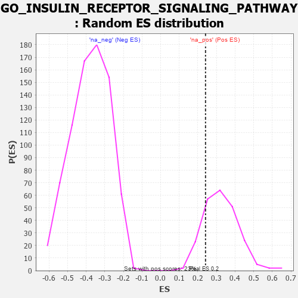

| | | Dataset | 7d |
| Phenotype | NoPhenotypeAvailable |
| Upregulated in class | na_pos |
| GeneSet | GO_INSULIN_RECEPTOR_SIGNALING_PATHWAY |
| Enrichment Score (ES) | 0.24137141 |
| Normalized Enrichment Score (NES) | 0.73930985 |
| Nominal p-value | 0.8043478 |
| FDR q-value | 0.94029844 |
| FWER p-Value | 1.0 |
Table: GSEA Results Summary
 Fig 1: Enrichment plot: GO_INSULIN_RECEPTOR_SIGNALING_PATHWAY
Fig 1: Enrichment plot: GO_INSULIN_RECEPTOR_SIGNALING_PATHWAY
Profile of the Running ES Score & Positions of GeneSet Members on the Rank Ordered List
| PROBE | GENE SYMBOL | GENE_TITLE | RANK IN GENE LIST | RANK METRIC SCORE | RUNNING ES | CORE ENRICHMENT | | 1 | IRS1 | | | 98 | 1.659 | 0.1053 | Yes |
| 2 | CSRP3 | | | 161 | 1.186 | 0.1816 | Yes |
| 3 | GSK3A | | | 351 | 0.745 | 0.2106 | Yes |
| 4 | AKT1 | | | 1040 | 0.476 | 0.1578 | Yes |
| 5 | AP3S1 | | | 1063 | 0.471 | 0.1884 | Yes |
| 6 | SRC | | | 1128 | 0.459 | 0.2129 | Yes |
| 7 | GAB1 | | | 1158 | 0.453 | 0.2414 | Yes |
| 8 | SOS1 | | | 1547 | 0.384 | 0.2197 | No |
| 9 | CDK4 | | | 1626 | 0.370 | 0.2362 | No |
| 10 | NCOA5 | | | 1884 | 0.322 | 0.2267 | No |
| 11 | FOXO4 | | | 2004 | 0.304 | 0.2332 | No |
| 12 | C2CD5 | | | 2204 | 0.276 | 0.2278 | No |
| 13 | GRB14 | | | 2666 | 0.204 | 0.1842 | No |
| 14 | FER | | | 2803 | 0.183 | 0.1801 | No |
| 15 | TNS2 | | | 3588 | 0.062 | 0.0858 | No |
| 16 | IGF1R | | | 3970 | -0.002 | 0.0380 | No |
| 17 | OPA1 | | | 4330 | -0.065 | -0.0026 | No |
| 18 | APC | | | 4558 | -0.107 | -0.0235 | No |
| 19 | SIK2 | | | 4875 | -0.172 | -0.0511 | No |
| 20 | IDE | | | 5252 | -0.258 | -0.0802 | No |
| 21 | INSR | | | 6204 | -0.538 | -0.1616 | No |
| 22 | KANK1 | | | 6536 | -0.678 | -0.1552 | No |
| 23 | PAK1 | | | 6691 | -0.757 | -0.1209 | No |
| 24 | GSK3B | | | 6719 | -0.768 | -0.0698 | No |
| 25 | VWA2 | | | 7927 | -3.205 | 0.0055 | No |
Table: GSEA details [plain text format]

Fig 2: GO_INSULIN_RECEPTOR_SIGNALING_PATHWAY: Random ES distribution
Gene set null distribution of ES for GO_INSULIN_RECEPTOR_SIGNALING_PATHWAY